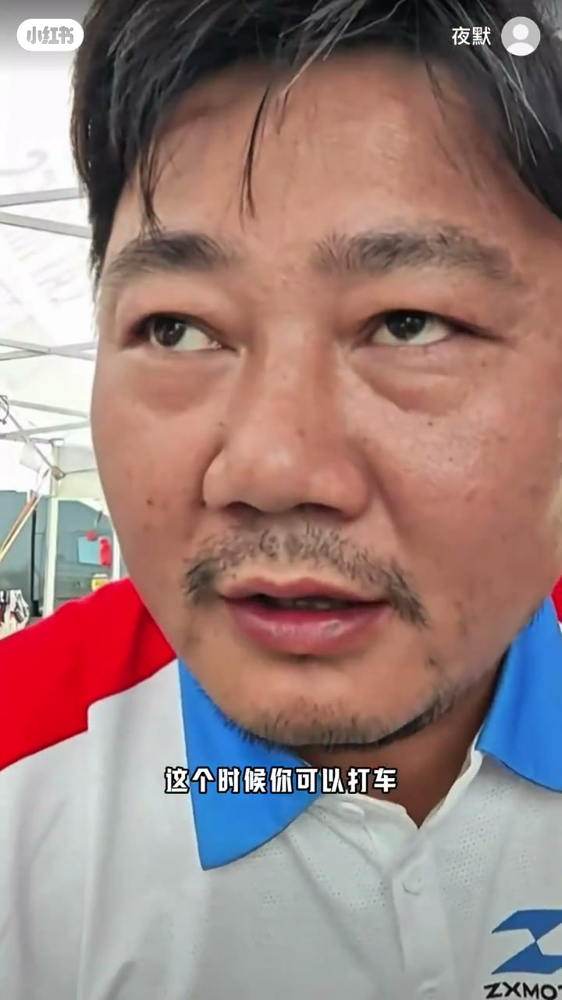
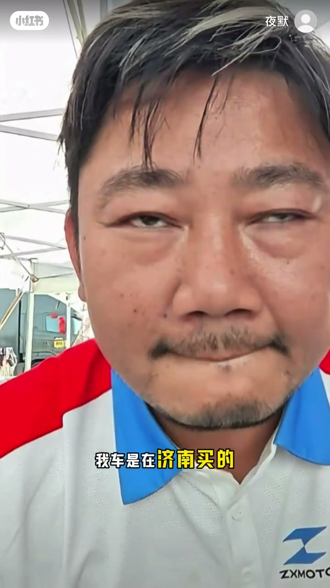
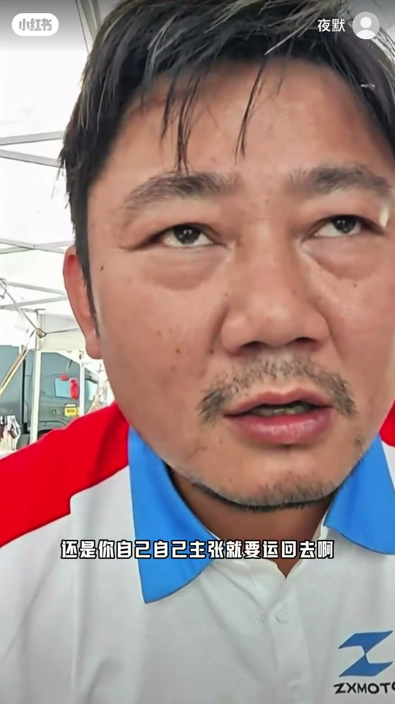
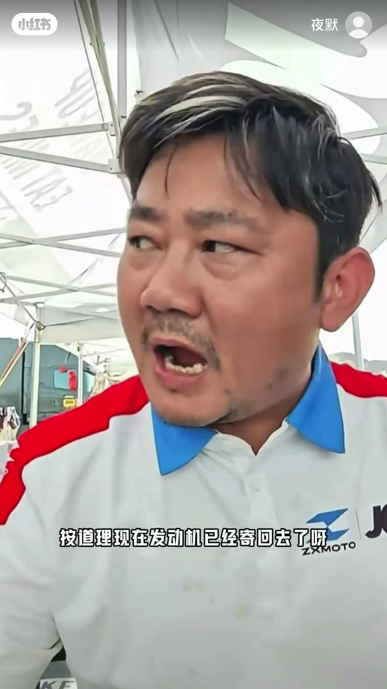
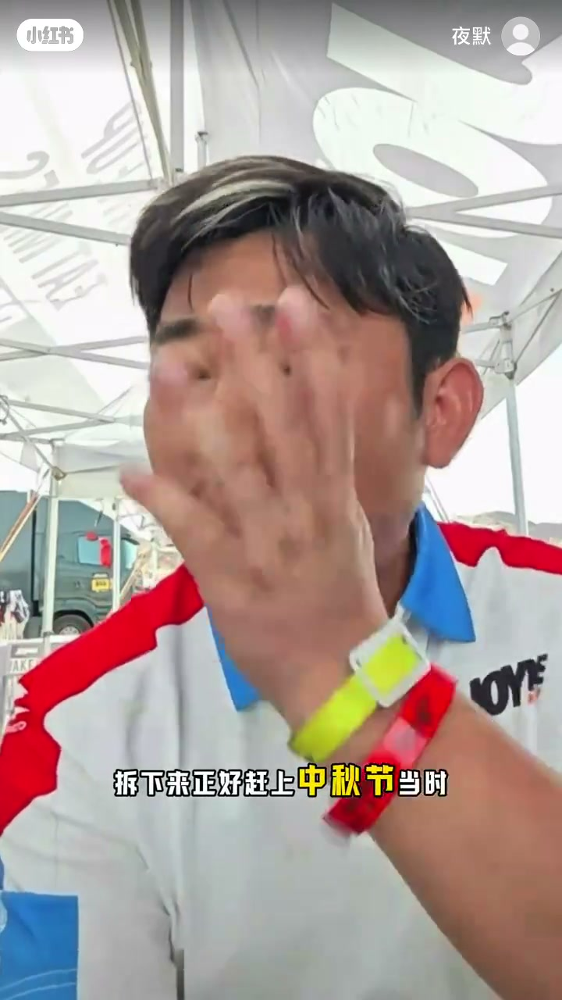

内容要点
ZXMOTO 车主「夜默」用约三分钟电话实录，讲济南购车后发动机故障返修：销售曾口头承诺跨城运费报销，车主有录音；客服确认「能证明就报销，说错也要担责」。中秋延误可补偿，但发动机未发出则当天骑不了车。Whisper 有繁体与地名误识，下文按画面字幕校正为济南/重庆等。
知识结构
起步异响、烧机油等需维修；客服称机械故障都可能发生，先问车主期望。
讨论从购车地运回所在地费用由谁承担，门店政策是否一致。
车主称销售答应报销济南段运费；客服：已承诺就不必再问我。
「能证明他说过，不报也得报」；车主称已录音，客服确认没问题。
发动机拆装赶上中秋双节延误可补偿；关心今天能否骑车——未发出则不行。
售后口头承诺以可举证为准：录音可把运费报销从「扯皮」变成「必须履约」；节假日延误可谈补偿，但不等于当天能提车。
00:00-01:25故障说明与运费谁出
开场车主回顾购车与故障：红绿灯起步、烧机油等要进厂。客服先把「爆缸/机械故障」归为可能发生的事，并反问车主希望怎么处理。
随后焦点转到跨城运费：从购车地回到所在地中间交通费谁承担。客服强调门店类型不影响统一政策，并追问是否车主自己主张要运回去。


01:56-02:43销售口头报销 + 录音证据
车主澄清：当时问的是卖车的销售，对方说过从购车地运到所在地运费给报销。客服立刻表态——他都答应报销，就不用再问我了。
关键一句：只要能证明销售说过，即使事后不报也得报，因为话说错了也要担责。车主回「我录音了」，客服确认「能证明就 OK，已经没问题了」。


02:43-03:11中秋延误补偿与能否骑车
车主提到发动机又拆下、正好赶上中秋。客服表示双节延误会补偿。车主最关心「节后能不能骑上车」——若发动机当天没发出，肯定骑不了。通话以「行好拜拜」结束。

完整转录（15段）
以下文本由 Whisper medium 模型自动转录，可能存在少量识别误差，已尽可能修正。
说我红绿灯�刚起步一档五十�
然后我的车现在也烧机油
这些都要去维修 他为什么会爆肛 那机械故障这个是都有可能会发生的 飞机也有可能会发生故障
这个我看了有可能解释清楚 没看我是解释不清楚的 然后您现在希望我怎么做
没关系 他是什么类的门店都是一样的
从寮城回到你的所在地中间的
还是你自己自己主张就要运回去啊 没有 当时我问的是销售我车的那个工作人员 他不说了我从寮城运到锦南这个运费他给我报销
那他都已经说了给你报销 那都不用问我了 然后
你只要能证明他跟你说说过 然后他不报销他也得报销了 因为他说的话哪怕说错了他都要承担责任
那这个就没有疑问了 你能证明他跟你说过他跟你说过这个话是不是
我录音了 能证明就ok了 没问题了 已经没有问题了
是哦 但是不对啊24号的话按道理现在发动机已经接
我又把发动机给我拆下来 拆下来正好赶好中秋节当时啊 哦 行行那那反正双因为双节延误的我们也是会补偿的
但是我就是我现在关心节可以骑上车吗 骑不了如果发动机今天没有发出去肯定就骑不了了
行好拜拜